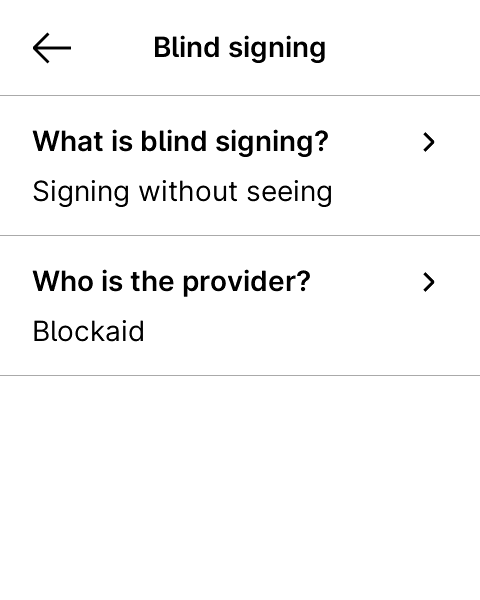
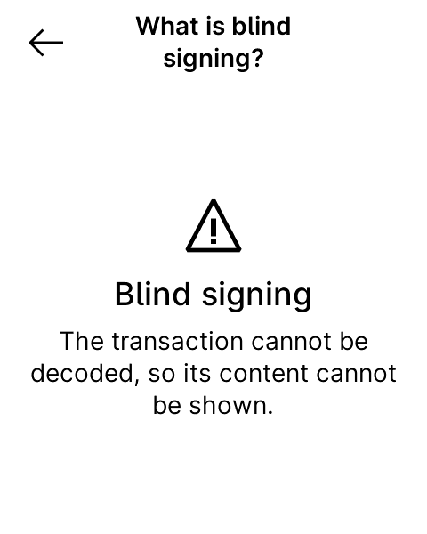
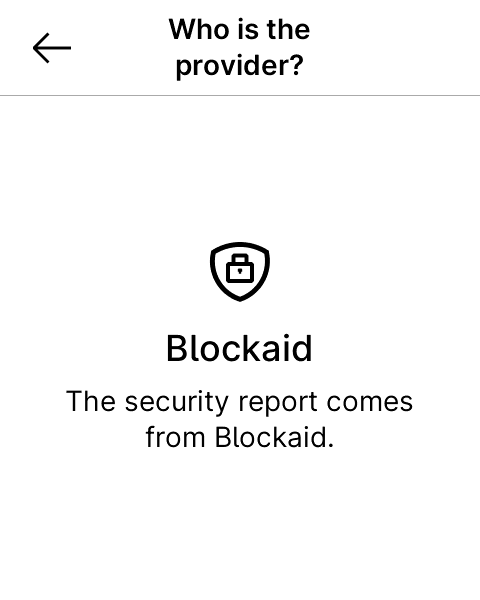
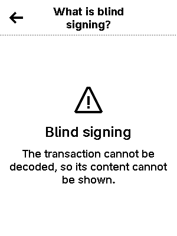
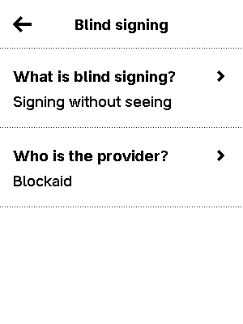
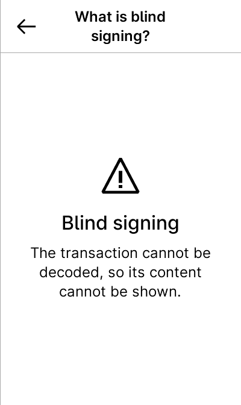
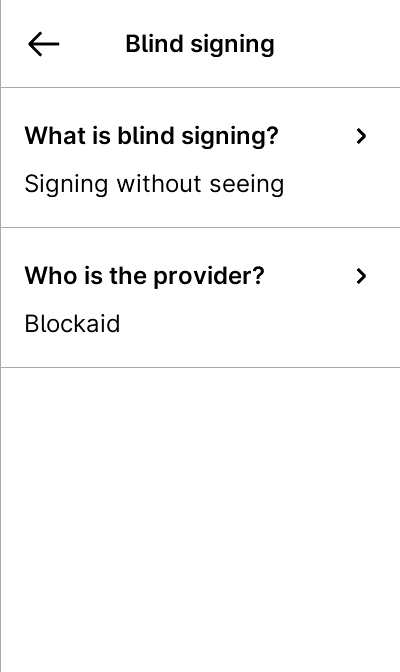
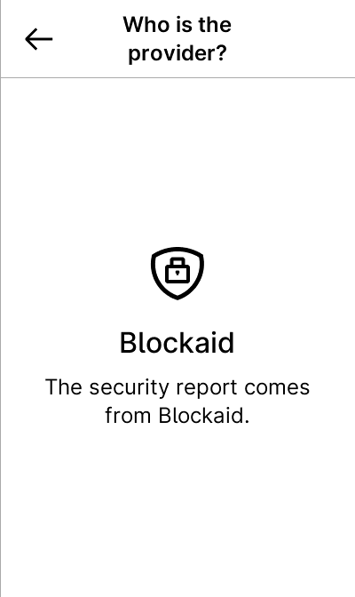

All use cases
nbgl_useCaseChoiceWithDetails
The same choice page, plus a top-right button opening a details modal: either one centered page, or a list of bars drilling down into sub-pages.
void nbgl_useCaseChoiceWithDetails(const nbgl_icon_details_t *icon,
const char *message,
const char *subMessage,
const char *confirmText,
const char *cancelText,
nbgl_warningDetails_t *details,
nbgl_choiceCallback_t callback);Centered details 2 screens
static nbgl_genericDetails_t details;
// Details shown as a single centered page, reached by the top-right button
details.title = "Blind signing";
details.type = CENTERED_INFO_WARNING;
details.centeredInfo.icon = &LARGE_WARNING_ICON;
details.centeredInfo.title = "Blind signing";
details.centeredInfo.description
= "The app cannot decode this transaction, so it cannot show you what "
"you are about to sign.";
details.centeredInfo.subText = "Only continue if you trust the source.";
nbgl_useCaseChoiceWithDetails(&LARGE_WARNING_ICON,
"Allow blind signing?",
"Transactions will be signed\nwithout being displayed.",
"I understand, confirm",
"Cancel",
&details,
catalog_on_choice);
Flex
480×600
Apex P
300×400
Stax
400×672

{kind=link}
{kind=link}
{kind=link}
{kind=link}
{kind=link}
Bar list details 5 screens
Each bar opens its own sub-page, reachable from the details modal.
static nbgl_genericDetails_t details;
static const char *const bar_texts[] = {"What is blind signing?", "Who is the provider?"};
static const char *const bar_sub_texts[] = {"Signing without seeing", "Blockaid"};
// Details shown as touchable bars, each one leading to its own sub-page
sub_details[0].title = bar_texts[0];
sub_details[0].type = CENTERED_INFO_WARNING;
sub_details[0].centeredInfo.icon = &LARGE_WARNING_ICON;
sub_details[0].centeredInfo.title = "Blind signing";
sub_details[0].centeredInfo.description
= "The transaction cannot be decoded, so its content cannot be shown.";
sub_details[1].title = bar_texts[1];
sub_details[1].type = CENTERED_INFO_WARNING;
sub_details[1].centeredInfo.icon = &LARGE_SECURITY_SHIELD_ICON;
sub_details[1].centeredInfo.title = "Blockaid";
sub_details[1].centeredInfo.description = "The security report comes from Blockaid.";
details.title = "Blind signing";
details.type = BAR_LIST_WARNING;
details.barList.nbBars = ARRAYLEN(bar_texts);
details.barList.texts = bar_texts;
details.barList.subTexts = bar_sub_texts;
details.barList.icons = NULL;
details.barList.details = sub_details;
nbgl_useCaseChoiceWithDetails(&LARGE_WARNING_ICON,
"Allow blind signing?",
"Transactions will be signed\nwithout being displayed.",
"I understand, confirm",
"Cancel",
&details,
catalog_on_choice);
Flex
480×600
id. 1
Top-right button
 Tap “Who is the provider?”
Tap “Who is the provider?”
{kind=link}

Tap “What is blind signing?”{kind=link}

Back
Tap “Who is the provider?”
{kind=link}

Apex P
300×400
id. 1
Top-right button
 Tap “What is blind signing?”
Tap “What is blind signing?”
Tap “What is blind signing?”
{kind=link}

Back{kind=link}

Tap “Who is the provider?”{kind=link}
Stax
400×672
id. 1
Top-right button
 Tap “What is blind signing?”
Tap “What is blind signing?”
Tap “What is blind signing?”
{kind=link}

Back{kind=link}

Tap “Who is the provider?”{kind=link}

Generated 2026-09-23T10:18:27+00:00.